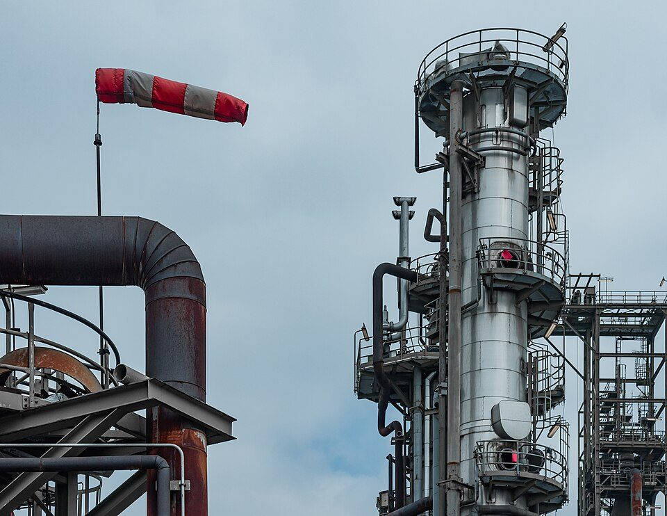
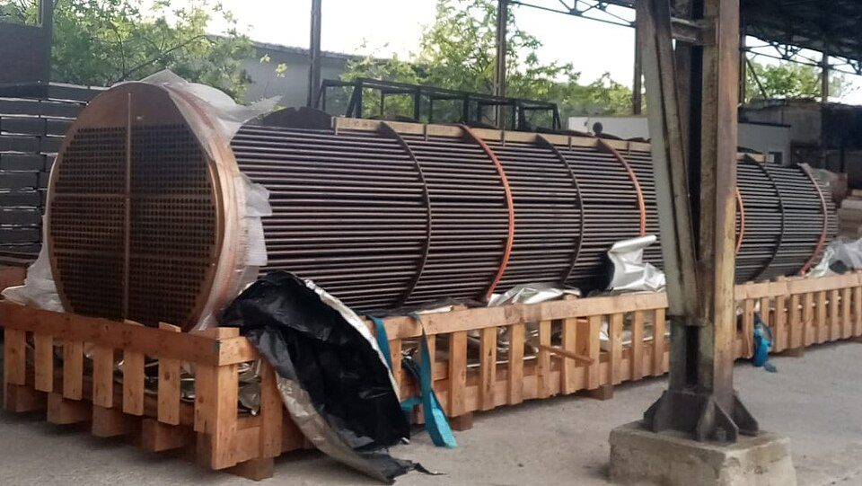
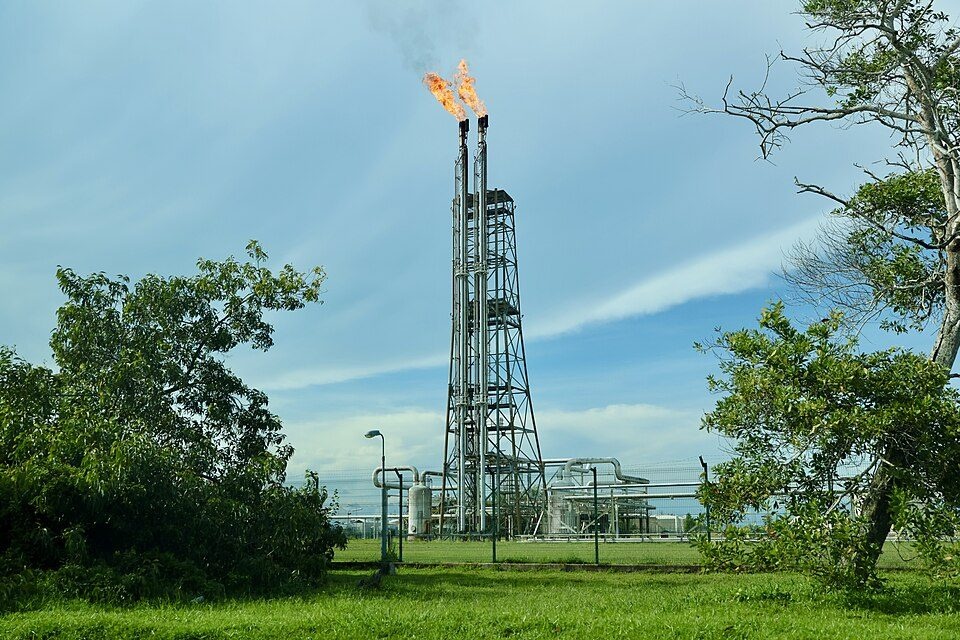

化学プラントの基本構成と仕組み：原料から製品までの流れ、主な装置、蒸留とエチレン製造、制御と安全
要点まとめ
化学プラントは、原料に化学変化や物理変化を起こして、燃料やプラスチックの原料などの製品をつくる設備のまとまりです[7]。この記事では、プラントの中の流れと主な装置、製油所とエチレンプラントの例、制御と安全の仕組みを、学会・業界団体・公的機関の資料でまとめました。業界や会社についてはプラントエンジニアリングとは、プラント全体の入門はプラントとは何かにまとめています。

化学プラントで起きていること
反応の前後に、混ぜる・分けるなどの工程がある
費用は、反応そのものより前後の工程にかかることが多い
化学工学会は、化学反応だけでは製品にならず、反応の前後に混合・分離など物理変化を主とする前処理と後処理が必要だと説明しています[1]。準備や後始末の工程の方に経費がかかる場合が多いとしています[1]。こうした処理を種類ごとに整理したのが「単位操作」という考え方です[1]。
主な装置の役割
| 装置 | 役割 | 仕組み・種類 |
|---|---|---|
| 蒸留塔 | 沸点の違いで成分を分ける | 塔内に0.3〜1.0m間隔でトレイ（棚）が並ぶ[4] |
| 反応塔（反応器） | 触媒などで化学反応を起こす[4] | 触媒の詰め方に固定床・流動床・移動床・沸騰床などがある[4] |
| 熱交換器 | 2つの流体の間で熱をやりとりする[4] | 大型のものは多管式。冷却器・凝縮器・再沸器などの用途がある[4] |
| 加熱炉 | 原料を高い温度に熱する[4] | ほとんどが管式。効率は自然通風式で80%前後[4] |
| ポンプ・圧縮機 | 液体・気体を送る[4] | ポンプは遠心ポンプが最も多い。圧縮機は水素や計器用の空気を送る[4] |
| 槽（ベッセル） | 一時的にためる・分ける[4] | 縦型・横型がある[4] |
| バルブ | 流量を調整する[9] | 玉形弁・仕切弁・ボール弁・バタフライ弁、逆流を防ぐ逆止弁など[9] |
熱交換器と加熱炉で、熱を上手に使う
加熱炉の燃料代は、製油所の運転費で最も大きい
石油エネルギー技術センターのサイトにある解説では、精製装置の運転費のうち、加熱炉の燃料費の割合が最も大きいとされています[4]。そのため、燃やす空気を排ガスと熱交換して温めておくなど、熱を回収して効率を上げています[4]。熱交換器は、プロセス用の大型のものには多管式が使われます[4]。

配管とバルブが、プラントの使いやすさを決める
配管設計の良し悪しが、運転のしやすさに大きく影響する
厚生労働省の職業情報は、化学プラントでは配管の設計・施工の良し悪しがプラントの操作性に大きく影響するため、配管設計は大きな工数を要する仕事だとしています[10]。バルブのうち、途中まで開いて流量を細かく調整する使い方に向くのは玉形弁です[9]。
例1：製油所の常圧蒸留
原油を350℃以上に熱し、蒸留塔で沸点ごとに分ける
上からLPガス・ナフサ・灯油・軽油、塔の底に残油
石油連盟によると、製油所ではまず原油を加熱炉で350℃以上に熱して常圧蒸留塔（トッパー）に吹き込み、LPガス・ナフサ・灯油・軽油・重油などに大まかに分けます[2]。蒸留塔の中では、上がっていく蒸気とトレイの上の液が触れ合い、成分が分かれていきます[4]。工業的には、塔の上から出た液の一部を塔に戻す「還流」をして濃度を高める精留がほとんどです[4]。
沸点の範囲は、ガソリン（ナフサ）が35〜180℃、灯油が170〜250℃、軽油が240〜350℃、残油が350℃以上です[11]。区切り方は資料によって少し違い、化学工学会の資料ではナフサを沸点50〜150℃の成分としています[3]。
例2：ナフサからエチレンをつくる
熱分解は、約800℃でわずか0.3〜0.6秒
分解してできたガスや油の約30%がエチレンになる
化学工学会の資料によると、エチレンプラントはナフサを熱で分解する工程と、成分を分ける工程の2つからなります[3]。ナフサの蒸気を水蒸気と一緒に、800度に熱した熱分解管に0.3〜0.6秒だけ通します[3]。石油化学工業協会は、800℃以上で分解すると、できたガスや油の約30%がエチレンになると説明しています[12]。
- 分解
ナフサと水蒸気を分解炉の管に通す
約800℃（図では750〜850℃）、0.3〜0.6秒[3]
- 分離
6本の蒸留塔で、成分ごとに分ける
1本の塔では2つの成分にしか分けられないため[3]
- 製品
エチレン・プロピレンなどができる
ほかにメタン・エタン・プロパン・ブタンなど[3]
分離に使う蒸留塔は100段以上あり、高いものは90mにもなり、中は20気圧に加圧されています[3]。工場では、コンピュータで温度や反応の状態が管理されています[13]。
ユーティリティと、計装・制御
製造設備のほかに、電気や蒸気をつくる設備がある
製造する「オンサイト」と、支える「オフサイト」に分ける
厚生労働省の職業情報では、直接製造を行う設備をオンサイト設備と呼ぶのに対し、電力・蒸気などのユーティリティ設備、倉庫、貯槽、事務管理棟などをオフサイト設備と呼んでいます[14]。製油所では、圧縮機で計器用の空気をつくって送ります[4]。
流量・温度・圧力・液面を測り、制御室で集中管理する
1975年に、世界初のDCS（分散形制御システム）が登場
プラントの運転では、装置の流量・温度・圧力・液面などを計器で測り、運転の条件に合うように操作します[4]。大きなプラントでは、運転に必要な情報をすべて計器室（制御室）に集めて、プラント全体を集中管理します[4]。横河電機は、1975年に販売を始めたCENTUMを世界初のDCSとしています[15]。
安全のための装置は、ふだんの制御と分ける
安全計装システムは、異常のときにプラントを安全に止める
横河電機は、安全計装システムを、事故を未然に防ぎ、万一の事故でも被害の拡大を防ぐためのものと説明しています[5]。制御システムと安全計装システムは分ける必要があり、これはJISの要求だとしています[5]。
設計図の種類
| 図面 | 内容 |
|---|---|
| プロセスフローシート（PFD） | プロセスの流れを図面に表したもの。プロセス設計の成果をまとめる[7] |
| P&Iダイアグラム（P&ID） | プロセスフローシートを詳しくしたもの[7] |
| プロットプラン（配置図） | 生産設備・ユーティリティ設備・配管の通り道・倉庫などを敷地にどう置くかを決める[17] |
| 配管図 | 配管のレイアウトを検討して仕上げる詳細設計の成果[10] |
配管設計は、プロットプラン・プロセスフローシート・P&Iダイアグラムをもとに進めます[10]。図面のもとになる3Dモデルの作り方は、プラントの3Dモデルはどう作られるのかにまとめています。
安全の仕組みと事故
| 法令 | 主な内容 |
|---|---|
| 高圧ガス保安法 | 高圧ガスによる災害を防ぐ。圧縮ガスなら、常用の温度で1MPa以上などが「高圧ガス」[18] |
| コンビナート等保安規則 | 圧力が上がりすぎたときの安全装置（安全弁など）と放出管、誤った操作を防ぎ原料を自動で止めるインターロック、ガス漏れの検知警報、フレアースタックなど[19] |
| 消防法 | 引火性液体などの危険物は、指定数量以上を製造所・貯蔵所・取扱所以外で扱ってはならない[20] |

コンビナートの事故は、増える傾向にある
2025年の一般事故は425件。漏えいが55%、火災が40%
消防庁によると、2025年の石油コンビナート等特別防災区域の事故は427件で、地震によらない一般事故は425件と過去最多でした[6]。種類は漏えいが233件（54.8%）、火災が170件（40.0%）です[6]。原因は、配管などの腐食・疲労などの劣化を含む物的要因が49%、操作の確認不足などの人的要因が41%でした[6]。
今回確認できなかった点
- 単位操作（蒸留・吸収・ろ過など）それぞれの短い定義を示した公的な資料
- 槽型・管型の反応器の分類と、触媒の役割の公的な解説
- PFDとP&IDの描く内容の詳しい違い、図記号の規格（JIS Z 8204など）の本文
- 冷却水・窒素などのユーティリティの用途と、フレアスタックの役割の公的な説明
- 2025年の高圧ガス事故の件数（経済産業省の資料を読めなかった）
出典（20件）
閲覧日はいずれも2026年11月10日
- 化学工学とは（化学工学会）
- よくある質問「製油所の精製工程」（石油連盟）
- エチレンプラント－石油化学の原料、低分子炭化水素をつくる－（化学工学会 夢化学委員会）
- 製油所の機器・計装の解説（安全に関する知識 No.31）（石油エネルギー技術センター）
- 安全計装システム（横河電機）
- 令和7年中の石油コンビナート等特別防災区域の特定事業所における事故概要（2026年5月29日）（総務省消防庁）
- 職業情報【エンジニアリング業】設計「プロセス設計」（厚生労働省）
- 部会（化学工学会）
- バルブのいろは（1）ー構造と接続方法ー（滋賀県 北部産業技術共創センター）
- 職業情報【エンジニアリング業】設計「配管設計」（厚生労働省）
- 石油便覧 石油製品の製造工程（ENEOS）
- 石油化学ものしり辞典（石油化学工業協会）
- 石油化学コンビナートを探る ②ナフサ分解工場（石油化学工業協会）
- 職業情報【エンジニアリング業】設計「ユーティリティ・オフサイト設備設計」（厚生労働省）
- 統合生産制御システム（DCS）（横河電機）
- でんきの礎「産業プロセス分野向け分散型制御システム」（電気学会）
- 職業情報【エンジニアリング業】設計「全体・部分配置計画」（厚生労働省）
- 高圧ガス保安法（e-Gov法令検索）
- コンビナート等保安規則（e-Gov法令検索）
- 消防法（e-Gov法令検索）
写真・画像の出典（3件）
- 石油化学プラントの塔（ドイツ・ケルン）
写真: CEphoto, Uwe Aranas／Wikimedia Commons（CC BY-SA 3.0） - 多管式熱交換器の管の束
写真: Harald the Bard／Wikimedia Commons（CC BY-SA 4.0） - 製油所のフレアスタック（ブルネイ）
写真: Yu Chu Chin／Wikimedia Commons（CC BY-SA 4.0）